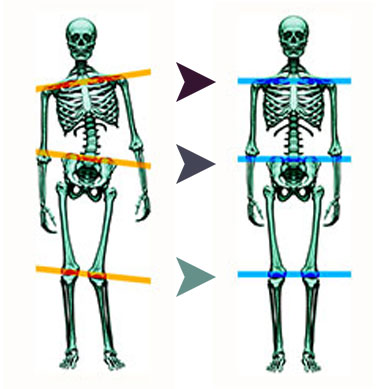

GPA is based on Newton’s Third Law and its effect on the human body. When any body part is out of alignment, gravity immediately forces the body to rebalance. This creates distortions throughout the musculoskeletal chain.The goal of GPA is to the create a symmetrically balanced upright posture relative to the downward stress of the gravity, so it:
The GPA methodology is to first investigate the entire skeletal structure and identify all unbalances. Then create a systematic procedure to achieve a balanced two-legged posture. When an upright structure is symmetrically balanced, discomfort will decrease dramatically. The fundamental concept is to understand that the pedal (feet) foundation is the initiator, as well as the endpoint, in all GPA postural corrections.
A balanced body will also enhance the brain’s innate healing ability. It also eliminates stressful structural and functional issues that affect normal functional activity, balance, strength and flexibility.
GPA material reproduced here with the permission of Dr. Nelson Vetanze – BS, D.C., CCEP